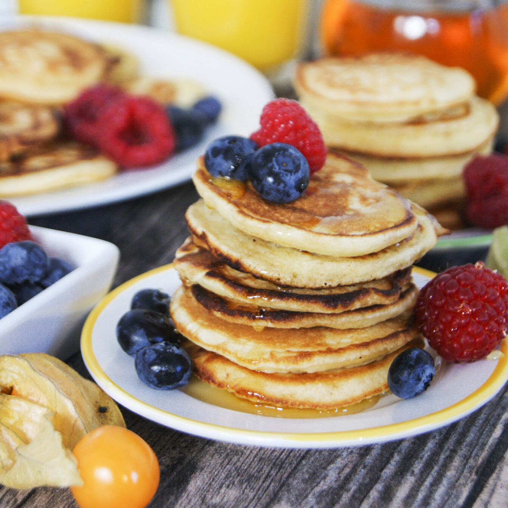

Amerikanska Pannkakor
Tillbaka till startsidan
Ingredienser
2½ dl vetemjöl
2 tsk bakpulver
2 msk socker
1 nypa salt
2½ dl mjölk
1 ägg
2 msk smält smör eller olja
PS. Om man vill göra vanliga pannkakor så räcker det med att ta bort bakpulvret och sockret! ;)
Gör så här
Blanda mjöl, bakpulver, socker och salt i en bunke.
Vispa ihop mjölk, ägg och smält smör i en annan skål.
Häll i de våta ingredienserna i de torra och rör ihop till en slät smet.
Stek små pannkakor på medelvärme tills bubblor syns, vänd och stek klart.
Servera med lönnsirap, bär eller nutella!
Amerikanska Pannkakor
